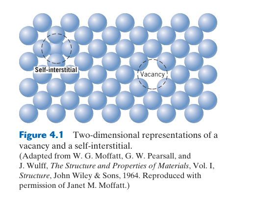
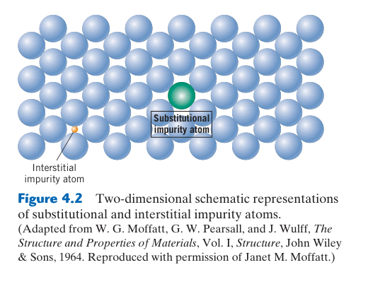
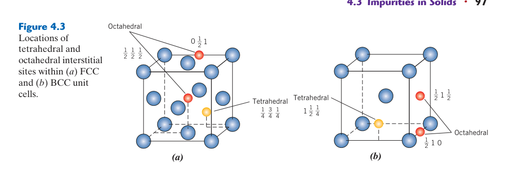
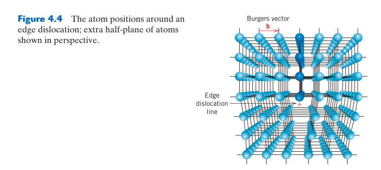
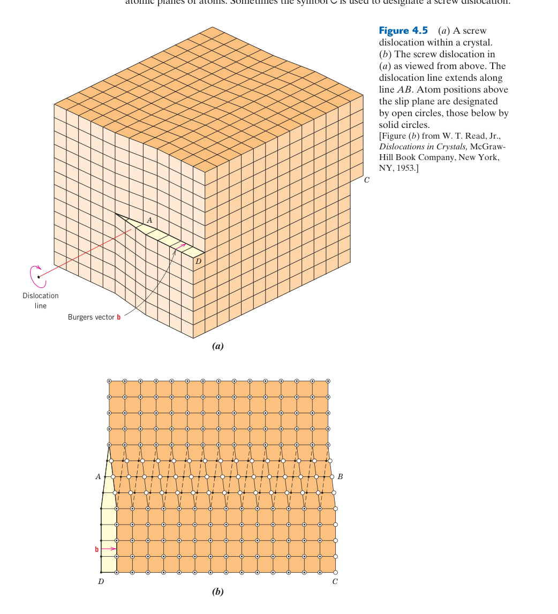
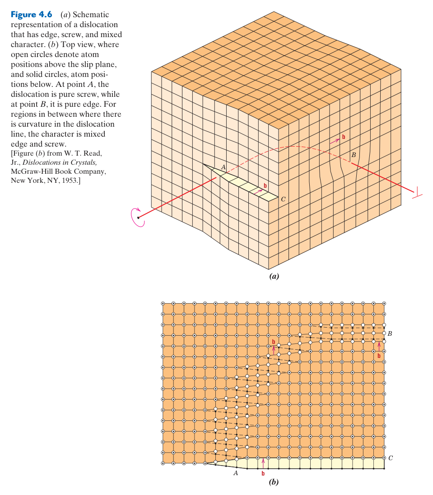
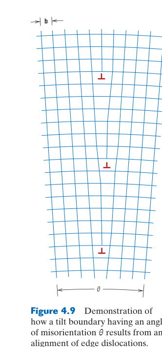
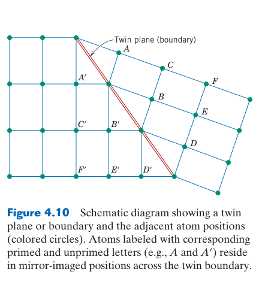
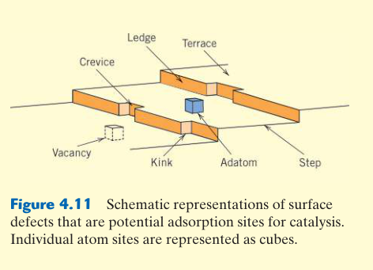

固體中的缺陷
📌 本章要解決的核心問題
第 3 章描述了完美晶體——每個原子都在它「應該」在的位置。但真實材料充滿了缺陷。矛盾的是：正是這些缺陷使材料有用。沒有空位就沒有擴散（無法熱處理），沒有差排就無法塑性變形（金屬一彎就斷），沒有晶界就無法細晶強化。本章系統性地分類、量化並解釋各種晶體缺陷——點缺陷（0D）、線缺陷（差排，1D）、面缺陷（晶界，2D）——以及用顯微鏡觀察它們的方法。
🔑 關鍵概念（10 條）
- 空位（vacancy）：晶格位置缺少原子——熱力學上必然存在，濃度隨溫度指數上升
- 自間隙（self-interstitial）：原子擠入間隙位置——形成能極高，平衡濃度極低
- 固溶體（solid solution）：取代型（substitutional）和間隙型（interstitial）
- Hume-Rothery 規則：預測取代型固溶度的四大條件——尺寸、結構、電負度、價數
- 差排（dislocation）：一維線缺陷——塑性變形的載體。刃型（edge）與螺旋型（screw）
- Burgers 向量 $\mathbf{b}$：量化差排的強度與方向——Burgers 迴路法定義
- 晶界（grain boundary）：不同取向晶粒間的界面——阻礙差排、快擴散路徑
- Hall-Petch 關係：$\sigma_y = \sigma_0 + k_y d^{-1/2}$——細晶粒 = 更高強度
- ASTM 晶粒大小：$N = 2^{n-1}$（100× 下每平方英寸晶粒數）
- 顯微鏡三級：OM（μm）→ SEM（nm 表面）→ TEM（原子級內部）
🧭 本章推理地圖
- 有限溫度下，原子排列混亂可提高熵（§4.1）→ 真實晶體具有平衡濃度的點缺陷（§4.2）。
- 溫度、成分與製程改變缺陷族群（§4.1–§4.4）→ 形成點、線、面與體缺陷（§4.2、§4.5–§4.7）。
- 空位提供原子跳躍位置（§4.2）→ 使擴散成為可能（Ch5）；差排可逐步移動（§4.5）→ 降低塑性滑移所需應力（Ch7）。
- 溶質原子（§4.3）、晶界（§4.6）與析出物會阻礙差排 → 可用缺陷強化材料（Ch7）。
- 用顯微鏡與晶粒尺寸量測辨認缺陷（§4.9–§4.11）→ 建立「製程 → 缺陷結構 → 性質」的證據鏈。

4.1 導論（Introduction）
閱讀本章的核心問題：不是「材料有沒有缺陷」，而是缺陷的種類、濃度、尺度、分布與交互作用如何改變性質。相同平均含量若集中在晶界、表面或裂尖附近，影響可能完全不同；因此描述缺陷時必須同時回答位置與統計分布。
第 3 章討論了理想化的完美晶體結構。然而，真實晶體中充滿了各種缺陷（imperfections）——原子排列的偏差。這些缺陷不是材料的「瑕疵」，恰恰相反：正是缺陷賦予材料最有用的工程性質。沒有缺陷，金屬就無法塑性變形（需要差排移動）、無法被強化（需要晶界和溶質原子阻擋差排）、半導體就無法導電（需要摻雜）。
缺陷可依其維度分類：零維（點缺陷——空位、間隙原子、雜質）、一維（線缺陷——差排）、二維（面缺陷——晶界、相界、表面）、三維（體缺陷——孔洞、裂紋）。每種類型對材料性質有獨特的影響。本章重點討論點缺陷、差排和晶界，為後續的擴散（Ch5）和塑性變形（Ch7）奠定基礎。
如果 Ch3 的完美晶體是一座理想建築的藍圖，Ch4 的缺陷就是實際施工中的「接縫」和「管線」——沒有它們，建築雖然在圖紙上完美，但無法通水通電（無法傳遞原子和差排）。空位是原子遷移的載體（Ch5 擴散），差排是塑性變形的載體（Ch7），晶界是強化元素（Ch7.8 Hall-Petch）。
缺陷是相對於參考結構定義的
稱某個位置為缺陷，必須先指定理想參考晶體。空位是相對於應被占據的晶格位置；置換原子在純金屬中是雜質，在刻意設計的固溶合金中卻是正常成分；相界對單相晶體是結構中斷，對兩相複合組織則是不可缺少的承載與反應區域。缺陷不等於品質不良，而是結構偏離理想週期的方式。
平衡缺陷與非平衡缺陷
空位可由形成能與組態熵競爭得到平衡濃度；差排、殘留應力與孔隙則常由凝固、變形、淬火或燒結歷史保留下來，數量遠離平衡。退火可讓部分非平衡缺陷消失或重排，但需要原子具有足夠移動速率。描述缺陷時要同時回答「熱力學上想變成什麼」與「在給定時間內能否到達」。
同一缺陷可能有利也可能有害
晶界可阻擋差排提高室溫強度，也會加速高溫擴散與晶界腐蝕；孔隙通常降低強度，卻可使濾材、骨植入物與含油軸承獲得功能；溶質可強化金屬，也可能在晶界偏析造成脆化。工程目標不是消除所有缺陷，而是控制種類、尺寸、密度、分布與位置。

4.2 空位與自間隙（Vacancies and Self-Interstitials）
量測提醒：正電子湮滅、電阻率與體積變化可間接量測空位，但各方法對缺陷尺寸和濃度的敏感範圍不同，需以標準樣與多種訊號交叉校正。
平衡濃度公式的推導脈絡
形成空位會增加內能，代價約為 $N_vQ_v$；但把 $N_v$ 個空位安排在 $N$ 個位置上又增加組態熵。最小化 $G=H-TS$ 可得到 $N_v/N\approx\exp(-Q_v/kT)$。更完整形式含形成熵前因子 $\exp(\Delta S_f/k)$，因此由實驗 Arrhenius 圖外推的截距不必等於 1。公式假設缺陷稀薄且彼此不交互作用；高濃度、帶電缺陷或缺陷團簇需更完整模型。
空位從哪裡產生、到哪裡消失
升溫時空位可由自由表面、晶界與差排攀移產生；降溫時則擴散到這些 sinks 湮滅。快速淬火使空位來不及移出，保留高於低溫平衡值的濃度。隨後時效中，過量空位可能促進溶質擴散、形成空位團簇或在 sinks 消失，因此它對析出的加速通常隨時間衰減。
Frenkel 對與輻照缺陷
高能粒子把原子撞離正常位置時，同時留下空位與自間隙，形成 Frenkel pair。自間隙遷移通常很快，可和空位復合，也可聚集成差排環；空位團簇則可能形成孔洞與腫脹。核材料的損傷不能只以「位移原子數」判斷，還需看溫度、劑量率、缺陷復合與 sinks 密度。
空位（vacancy）是最簡單的點缺陷——晶格中一個應該有原子的位置是空的。所有晶體材料中都有空位，而且空位是熱力學上穩定的。為什麼？因為雖然形成空位需要打斷鍵結（焓增加 $\Delta H > 0$），但空位的存在增加了系統的組態熵（configurational entropy）——在 $N$ 個原子位置中放置 $N_v$ 個空位的方法數極多。在任意給定溫度下，存在一個使 Gibbs 自由能 $G = H - TS$ 最低的平衡空位濃度。
指數關係意味著空位濃度對溫度極其敏感。以銅為例（$Q_v = 0.9$ eV）：室溫（298 K）時 $N_v/N = \exp(-0.9/(8.62\times10^{-5} \times 298)) = \exp(-35.0) \approx 6 \times 10^{-16}$——幾乎沒有空位。但在 1000°C（1273 K）時：$N_v/N = \exp(-8.20) \approx 2.7 \times 10^{-4}$——每 10,000 個位置中有約 3 個空位。溫度從室溫升到 1000°C，空位濃度飆升了11 個數量級。
自間隙原子（self-interstitial）：一個原子擠入晶格間隙位置。因為這會造成巨大的晶格畸變（擠壓周圍原子），形成能極高（通常為空位的 3–5 倍），因此在平衡狀態下濃度極低——通常可忽略。在輻照損傷（radiation damage）條件下，高能粒子撞擊可產生大量非平衡的自間隙原子和空位對（Frenkel 對）。
📝 範例 4.1：鋁在 500°C 的空位濃度
題目：鋁的 $Q_v = 0.75$ eV/atom。計算鋁在 500°C (773 K) 時的平衡空位濃度。
解：$N_v/N = \exp(-0.75/(8.62\times10^{-5} \times 773)) = \exp(-11.26) = 1.3 \times 10^{-5}$。
答案：每 100,000 個原子位置中約有 1.3 個空位。若將此鋁試片從 500°C 淬火到室溫，這些非平衡空位被「凍結」在晶體中——它們會加速後續的擴散過程（Ch5）。
Arrhenius 圖與形成能
把空位分率取自然對數可得 $\ln(N_v/N)=-Q_v/(kT)$。若以 $\ln(N_v/N)$ 對 $1/T$ 作圖，在形成能近似不變時應為直線，斜率為 $-Q_v/k$。這種線性化可由實驗濃度反求形成能，也能檢查不同溫區是否出現機制改變。
更完整表示可包含形成熵前因子：$N_v/N=\exp(\Delta S_f/k)\exp(-\Delta H_f/kT)$。簡化式把前因子視為約 1，適合建立量級；精密分析時，振動熵與多種缺陷態會影響截距。由單一溫度資料反推 $Q_v$ 容易受前因子假設影響，最好使用多溫度斜率。
淬火能保留多少空位？
高溫平衡空位在快速降溫時可能來不及到達表面、晶界或彼此湮滅，因此形成過飽和空位。但「淬火後濃度等於高溫平衡值」只是上限；降溫途中仍會損失一部分，厚度、冷卻速率與缺陷匯密度都會影響保留量。後續時效時，空位又會協助溶質擴散並逐步被消耗。
輻照產生 Frenkel 對與缺陷團簇
高能粒子把晶格原子撞離位置，留下空位並產生自間隙，形成 Frenkel 對。初級撞擊原子還可能引發碰撞級聯，一次產生許多缺陷。空位與間隙可復合，也可聚集成空洞、差排環或偏析區，導致硬化、腫脹與脆化。輻照缺陷濃度由產生率與回復速率共同決定，不是熱平衡公式單獨能描述。

4.3 固體中的雜質（Impurities in Solids）
單相不等於原子尺度均勻：繞射看到相同平均晶格時，仍可能存在偏析、團簇與短程有序。
固溶度是熱力學結果
Hume–Rothery 規則只提供完全互溶的經驗趨勢；實際固溶度由混合焓與混合熵的競爭決定。尺寸或鍵結差異大時混合焓偏正，降溫後可能分相或形成有序化合物；高溫的組態熵則常擴大單相固溶範圍。因此「原子尺寸差小於 15%」不能單獨保證任意比例互溶。
置換與間隙的判斷
先比較溶質尺寸與可用間隙，再檢查晶體結構與化學鍵。C 在 BCC Fe 中占八面體間隙並造成強烈四方畸變，雖含量低卻能有效強化；H 更小、擴散快，可被差排與界面捕捉並引發氫脆。B、N、O 等可能因材料不同而採間隙、置換或化合物狀態，不能只憑元素大小分類。
偏析與短程有序
即使 XRD 顯示單一固溶相，溶質也未必完全隨機。原子可能偏好異種或同種鄰居，形成短程有序或團簇；晶界、表面與差排應力場還會吸引特定溶質。這些奈米尺度分布會改變降伏、擴散、腐蝕與時效，平均成分相同的材料仍可能有不同性能。
純金屬在工程上很少使用——大多數金屬是合金（alloys），刻意添加雜質原子以改善性質。雜質原子可以兩種方式溶入主晶格：(1) 取代型固溶體（substitutional solid solution）——雜質原子取代主原子位置；(2) 間隙型固溶體（interstitial solid solution）——雜質原子填入主晶格的間隙位置。哪種方式取決於原子尺寸和化學性質。
Hume-Rothery 規則（預測兩種金屬能否形成廣泛的取代型固溶體）：(1) 尺寸因子：原子半徑差異 < 15%；(2) 晶體結構：兩者必須相同；(3) 電負度：差異小（否則傾向形成化合物）；(4) 價數：較高價數的溶質在較低價數溶劑中有較大溶解度。例如 Cu 和 Ni 完全互溶（兩者皆 FCC、半徑相近 $R_{\text{Cu}}=0.128$ vs $R_{\text{Ni}}=0.125$ nm、電負度相近）；而 Cu 和 Pb 幾乎不互溶（尺寸差異 >15%、電負度差異大）。
間隙固溶體的經典案例是碳在鐵中。碳原子（$R \approx 0.071$ nm）遠小於鐵原子（$R \approx 0.124$ nm），可以擠入鐵晶格的間隙位置。但 BCC 鐵的間隙極小（八面體間隙半徑 ~0.019 nm），只能容納極少量碳（室溫 <0.005 wt%）。FCC 鐵的間隙較大（~0.052 nm），可容納高達 ~2.14 wt% 碳——但碳原子仍然比間隙大，造成顯著畸變。這些畸變正是麻田散鐵（martensite）極高硬度的來源（Ch10）。
Hume–Rothery 規則是必要趨勢，不是保證
尺寸、結構、電負度與價數相近有利於廣泛固溶，但最終溶解度由混合 Gibbs 自由能決定，並隨溫度改變。兩元素即使滿足尺寸條件，也可能因強烈化學親和形成有序化合物；不完全滿足時，也可能在高溫或有限濃度下形成固溶體。規則適合初篩，不能取代相圖。
溶質造成尺寸與模數失配
較大置換原子使周圍晶格受壓，較小原子造成相反畸變；溶質與基材彈性模數不同也會擾動局部應力場。這些場可與差排吸引或排斥，使差排通過需要額外應力，形成固溶強化。間隙原子通常引起更強、且可能非球對稱的畸變，因此少量碳或氮就能顯著強化鐵。
隨機固溶、短程有序與偏析
「固溶體」不保證溶質完全隨機。異種原子若彼此吸引，可能出現短程有序；若同種原子較偏好相鄰，則有聚集與相分離傾向。晶界、差排與表面具有不同能量，也會吸引特定溶質形成偏析。平均成分相同，原子尺度分布不同，強度、腐蝕與電性仍可能不同。
分析微量雜質時還要區分故意合金元素與殘留污染。鋼中的 C、Cr、Ni 可是設計成分，P、S、H 在某些用途則需嚴格限制；半導體需要 ppb–ppm 級純度控制。某元素是有益或有害取決於濃度、位置、價態與使用條件。
🧠 判斷取代或間隙
先比較尺寸：與基材相近者較可能取代，遠小者才可能進入間隙；再檢查可用間隙大小與化學作用。小並不保證一定間隙固溶，例如溶質可能更穩定地形成化合物。最終應以晶格參數、繞射占位或原子尺度分析驗證。

4.4 成分表示法（Specification of Composition）
換算的可靠流程
wt% 與 at% 換算時，可先假設 100 g 或 100 mol 合金，再用原子量把各元素轉成莫耳數或質量，最後重新正規化為 100%。二元系可直接套公式，多元系仍按相同步驟逐項計算。ppm 必須註明是質量、莫耳或體積基準；氣體、半導體與水溶液常用不同慣例。
成分資料還要區分整體、局部與相成分。EDS 點分析給局部互作用體積的近似元素比例，槓桿定律中的端點則是各相平衡成分；兩者都不是合金標稱總成分。報告時應註明方法、取樣尺度、偵測極限與是否正規化，避免把微區半定量值當作整批化學分析。
合金成分可用重量百分比（wt%）或原子百分比（at%）表示。兩者的換算公式：
關鍵洞察：對於輕元素（如碳），wt% 和 at% 差異巨大。Fe-0.5 wt% C 鋼中，碳的 at% = $\frac{0.5/12.01}{0.5/12.01 + 99.5/55.85} \times 100 = 2.3$ at%。雖然碳的重量只有 0.5%，但因為碳原子極輕，每 100 個原子中就有 2.3 個是碳原子。這對解讀相圖（Ch9）很重要——Fe–C 相圖的成分軸是 wt%，但微觀結構比例計算需要 at%。
📝 範例 4.2：wt% 與 at% 換算
題目：黃銅含 70 wt% Cu 和 30 wt% Zn。求其 at% 組成。（$A_{\text{Cu}}=63.55$, $A_{\text{Zn}}=65.41$ g/mol）
解：$C_{\text{Cu}}(\text{at\%}) = \frac{70/63.55}{70/63.55 + 30/65.41} \times 100 = \frac{1.101}{1.101 + 0.459} \times 100 = 70.6$ at% Cu。$C_{\text{Zn}} = 29.4$ at% Zn。本例中 wt% 和 at% 相近，因 Cu 和 Zn 原子量接近。
換算的通用方法：先假設總量
由 wt% 轉 at% 時，可假設有 100 g 合金，把每元素克數除以原子量得到 mol，再除以總 mol；由 at% 轉 wt% 時，可假設 100 mol 原子，把 mol 乘原子量得到質量，再正規化。這個流程比死背二元公式更容易推廣到三元與多元合金。
百分比、ppm 與濃度基準
1 wt% = $10^4$ wt ppm，但 atomic ppm 與 wt ppm 只有在原子量相近時才接近。氣體含量有時以質量 ppm、原子 ppm、mol/m³ 或每百萬基材原子表示；未註明基準的「50 ppm」是不完整數據。比較規範與量測結果前，必須確認分母、乾濕基準與元素／化合物形式。
相的成分與整體合金成分也不同。微區 EDS 可能量到某一析出物或晶粒，手冊牌號則是整體平均；若取樣區域不具代表性，兩者不能直接比較。報告成分時應附量測尺度與位置。
📝 三元合金的通用換算
對 60 wt% A、30 wt% B、10 wt% C，先算 $n_A=60/A_A$、$n_B=30/A_B$、$n_C=10/A_C$，再以 $x_i=n_i/(n_A+n_B+n_C)$ 求 at%。所有原子分率相加應為 1，所有重量分率也應為 1；這是最基本的自我檢查。

4.5 差排——線缺陷（Dislocations—Linear Defects）
差排線、Burgers 向量與滑移面
Burgers 向量在一條連續差排線上保持不變，但差排線方向可彎曲，因此同一差排可同時包含刃型、螺旋型與混合段。刃型段的滑移面由差排線與 $\mathbf b$ 張成；螺旋段因兩者平行，可在多個含 $\mathbf b$ 的面間交滑移。差排不能在晶體內任意終止，只能形成閉環、到達表面／界面，或在節點與其他差排反應。
滑移與攀移的原子機制
滑移讓差排在滑移面內移動，不需長程擴散，故可在低溫快速發生；攀移使刃差排離開原滑移面，需要吸收或放出空位，屬擴散控制並在高溫重要。攀移能繞過粒子、促進潛變與回復。螺旋差排可交滑移，交滑移難易又受堆疊錯能與差排分裂寬度控制。
差排反應與能量判準
相交差排的 Burgers 向量需守恆，例如 $\mathbf b_1+\mathbf b_2=\mathbf b_3$。因線能約與 $Gb^2$ 成正比，若反應後向量平方和較小，反應在能量上有利；產物若不位於可滑移面，可能形成 sessile lock，成為強障礙。加工硬化正是大量此類交互作用的巨觀結果。
差排（dislocation）是一維（線）缺陷，圍繞它的一些原子排列錯位。差排是塑性變形的最主要載體——金屬之所以能彎曲而不斷裂，正是因為差排在移動。如果沒有差排，金屬的理論降伏強度約為 $E/10 \approx 10$ GPa——但實際金屬降伏強度僅 ~10–100 MPa，低了 2–3 個數量級。這是因為差排移動只需要逐步打斷和重建少數原子鍵結，而不是同時打斷整個滑移面上的所有鍵結。
毛毛蟲類比：差排移動就像 毛毛蟲爬行——不是整條蟲同時移動，而是在後端形成一個「駝峰」、駝峰向前傳播、前端落地。差排以相同方式：一小段原子鍵結被打斷並重新形成，而差排線的移動就像駝峰的傳播。最終結果：差排完全穿過晶體，產生一個 Burgers 向量大小的永久位移（滑移步階）。
| 類型 | 描述 | Burgers 向量 vs 差排線 | 滑移方向 |
|---|---|---|---|
| 刃差排 (edge) | 多餘半原子面插入 | $\mathbf{b} \perp$ 差排線 | ∥ $\mathbf{b}$ |
| 螺旋差排 (screw) | 原子面螺旋式錯位 | $\mathbf{b} \parallel$ 差排線 | ∥ $\mathbf{b}$ |
| 混合差排 (mixed) | 大部分真實差排兼具兩者 | $\mathbf{b}$ 與線成任意角 | ∥ $\mathbf{b}$ |
Burgers 向量 $\mathbf{b}$ 是差排最重要的特徵參數——使用 Burgers 迴路法定義。在完美晶體中繞一個閉合迴路，在含差排的晶體中同樣的迴路無法閉合——所需的閉合向量就是 $\mathbf{b}$。FCC 金屬的 Burgers 向量通常為 $\frac{a}{2}\langle 110 \rangle$（最短的晶格平移向量）。
差排密度 $\rho_d$ = 單位體積中差排線的總長度（mm/mm³ = mm⁻²）。退火金屬：~10⁶ mm⁻²；重度冷加工金屬：~10¹⁰–10¹² mm⁻²。差排密度愈高，差排之間的交互作用（糾結、交割）愈強 → 材料愈難繼續變形 → 強度上升——這就是加工硬化（strain hardening, Ch7 §7.10）的本質。
Burgers 向量守恆與差排反應
Burgers 向量是晶格平移量，沿同一差排線保持不變；差排在節點相交或反應時，向量必須守恆，例如 $\mathbf b_1+\mathbf b_2=\mathbf b_3$。差排能量大致與 $Gb^2$ 成正比，因此反應若降低 Burgers 向量平方和通常較有利。完整差排也可分解成部分差排，中間夾著堆疊錯。
刃差排與螺旋差排的應力場
刃差排多餘半原子面上方偏壓縮、下方偏拉伸，可與尺寸失配溶質產生吸引；螺旋差排主要具有剪應力場。真實差排多為彎曲的混合線，不同線段的刃／螺旋成分隨方向改變。差排不是一條空洞，而是周圍許多原子小幅偏離平衡位置的核心與長程應力場。
滑移與攀移是不同運動
滑移發生在包含差排線與 Burgers 向量的滑移面內，由剪應力驅動，不需長程擴散；攀移則讓刃差排離開原滑移面，需要吸收或放出空位，因此在高溫擴散足夠時才明顯。螺旋差排還可能交滑移到另一個含相同 Burgers 向量的面，協助繞過障礙。
差排如何產生巨觀塑性
單條差排通過試片只造成一個 Burgers 向量的滑移，巨觀應變來自大量差排反覆生成與移動。Frank–Read 源可在應力下讓固定兩端的差排彎曲並放出差排環，快速增加密度。塑性開始後，差排增殖使變形得以持續，也因彼此阻礙造成加工硬化。

4.6 面缺陷（Interfacial Defects）
完整表徵：工程上應同時描述晶界角度、特殊邊界比例、偏析與連通性；單一平均晶粒尺寸不足以代表界面網絡對腐蝕、裂紋與擴散的影響。
界面品質需與服役機制一起判讀。
晶界能與晶界角度
低角度晶界可視為規則差排陣列，錯向角增加時差排間距縮小，界面能依 Read–Shockley 關係上升；到高角度後核心重疊，能量不再簡單隨角度增加。某些特殊重合位置晶格晶界具有較低能量與較佳抗腐蝕、抗脆化能力，晶界工程便利用熱機械處理提高其比例與連通性。
相界面的共格性
共格界面兩側晶格面連續，界面能低但有彈性錯配應變；粒子長大後錯配累積，可引入界面差排成為半共格，最終變成非共格。析出強化因此會隨粒子尺寸改變：共格應變可阻擋差排，非共格粒子則常迫使差排繞過。界面不能只用「有或沒有」描述，需同時考慮結晶取向、錯配與化學鍵。
晶界遷移與溶質拖曳
晶界在曲率、儲存能或相變驅動下移動；偏析溶質需隨界面重新分配，會產生拖曳，細小粒子則以 Zener 壓力釘扎。高溫時粒子粗化或溶解可突然解除釘扎，引發異常晶粒成長。晶界同時是快速擴散路徑、缺陷 sink 與偏析位置，其有利或有害取決於服役機制。
晶界（grain boundary）是不同晶體學取向的兩個晶粒之間的界面——原子排列紊亂、鍵結被扭曲、能量較高。晶界的工程重要性怎麼強調都不為過：(1) 阻礙差排運動——細晶粒材料更強（Hall-Petch 關係 $\sigma_y = \sigma_0 + k_y d^{-1/2}$）；(2) 快擴散路徑——晶界擴散的活化能約為體擴散的一半；(3) 優先腐蝕位置——晶界處能量高，易被化學侵蝕；許多不銹鋼的晶界腐蝕（ sensitization）就是碳化鉻在晶界析出導致的。(4) 析出優先位置——第二相顆粒傾向在晶界成核（異質成核，Ch10）。
其他重要的面缺陷包括相界（phase boundary）——不同相的兩個晶體間的界面（如鋼中肥粒鐵和雪明碳鐵之間），以及雙晶界（twin boundary）——晶格兩側呈鏡像對稱的特殊晶界。退火雙晶（如銅合金中常見的平行直線條紋）和變形雙晶（BCC 金屬低溫變形時產生）在顯微照片中極具特徵性。
ASTM 號數 $n$ 愈大 = 晶粒愈小！$N = 2^{n-1}$（$N$ 為 100× 下每平方英寸晶粒數）。$n=10$ 的晶粒是 $n=5$ 的 $2^5 = 32$ 倍數量——晶粒極細。初學者常看到「No. 10」以為是大晶粒，完全相反。
📝 範例：ASTM 晶粒大小與 Hall-Petch 的工程應用
題目：某鋼板在 100× 顯微照片中，每平方英寸有 64 個晶粒。求 ASTM 號數和對應的降伏強度增量。
解：$N = 2^{n-1}$，$64 = 2^{n-1}$ → $n-1 = 6$ → $n = 7$（ASTM No. 7）。
若 $n$ 從 5（$N=16$，$d \\approx 1/\\sqrt{16} \\propto 1/4$）提升到 9（$N=256$，$d \\propto 1/16$），晶粒尺寸縮小 4 倍 → Hall-Petch：$\\Delta\\sigma_y = k_y(d_5^{-1/2} - d_9^{-1/2})$。以低碳鋼 $k_y \\approx 0.55$ MPa·m¹/² 估算：$\\sigma_y$ 提升約 100–150 MPa——這正是熱機械控制軋延（TMCP）細化晶粒以同時提高強度和韌性的物理基礎。
低角度與高角度晶界
低角度傾斜晶界可近似為規則刃差排陣列，取向差愈大，差排間距愈小；扭轉晶界則可由螺旋差排網絡描述。當取向差高到差排核心重疊，晶界成為較無序的高角度界面。晶界能通常隨低角度失配增加，進入高角度後趨於較平緩。
界面相干性決定應變與移動
兩相晶格能連續對接時稱相干界面，界面能低但若晶格常數不同會累積彈性應變；部分相干界面以失配差排釋放部分應變；非相干界面原子對應較差，界面能通常較高。析出物由小變大時可能從相干轉為非相干，改變強化機制。
晶界遷移與溶質拖曳
晶界曲率造成降低總界面面積的驅動力，使大晶粒吞併小晶粒。溶質偏析與第二相顆粒可降低晶界移動速率，分別形成溶質拖曳與 Zener 釘扎。熱處理中的晶粒成長速度因此不只取決於溫度，也受純度與顆粒分布控制。
雙晶界是特殊低能界面
雙晶兩側具有明確鏡像或旋轉關係，原子匹配通常比一般高角度晶界好。退火雙晶常在低堆疊錯能 FCC 金屬中形成，變形雙晶則可在滑移不足時協助形變。雙晶可阻擋差排並細分晶粒，又因界面較規則而可能比普通晶界有較佳耐蝕與熱穩定性。
判讀體缺陷不能只看體積分率
同樣是 1% 的孔隙率，許多細小、近球形且均勻分散的孔洞，通常比一條尖銳而連通的裂縫安全得多。原因是缺陷危害同時受尺寸、形狀、方向、位置與彼此間距控制：尖端曲率半徑越小，局部應力集中越嚴重；缺陷若位在自由表面、焊道熱影響區或高拉應力區，也更容易成為破壞起點。因此工程檢驗不能只報告平均孔隙率，還應描述最大缺陷尺寸與其空間分布。
夾雜物與界面品質
夾雜物本身未必立即造成破壞，關鍵在於它與基材的彈性模數、熱膨脹係數及界面結合力是否匹配。硬而脆的夾雜物在塑性變形時不易與基材共同變形，可能自身破裂或在界面脫黏，形成微孔洞；微孔洞再成長、聚合，最後構成延性破壞的主裂紋。這也說明為何高潔淨度鋼的疲勞壽命常由最大夾雜物而非平均夾雜量控制。
非破壞檢測的選擇
表面開口裂紋可用染色滲透檢測；鐵磁性材料的表面與近表面缺陷可用磁粉法；內部孔洞與夾雜常用超音波或 X 光／電腦斷層掃描。每種方法都有可偵測尺寸、深度與材料幾何的限制，因此「未檢出」不等於「完全沒有缺陷」，而是缺陷低於該方法在既定條件下的偵測能力。
孔隙也可以是設計功能
體缺陷並非一律有害。過濾器需要連通孔讓流體通過；骨植入物需要開放孔隙供組織長入；隔熱材料利用封閉孔降低熱傳；含油軸承則利用連通孔儲存潤滑油。此時設計者必須在孔徑、連通性、比表面積與承載截面之間取捨，把「缺陷」轉化為受控制的功能性結構。
4.7 體缺陷（Bulk or Volume Defects）
檢測概率：缺陷評估需保留檢出概率、解析下限與假陽性資訊，避免把「未檢出」誤寫成「不存在」。
缺陷允收需連結載荷與檢測能力：同一孔洞在壓縮區可能影響有限，在高循環拉應力或焊趾附近卻可能成為疲勞源。工程規範因此常以缺陷種類、最大尺寸、方向和所在區域分級，而非只限制總孔隙率；驗收標準也需高於非破壞檢測的實際解析能力。
體缺陷是比點、線、面缺陷尺度更大的三維缺陷，包括孔洞（pores）、裂紋（cracks）、夾雜物（inclusions）和第二相顆粒（second-phase particles）。與空位不同，體缺陷不是熱力學平衡缺陷——它們在加工和製造過程中被引入。
孔洞常見於鑄造（凝固收縮導致的縮孔 shrinkage cavity）、焊接（氣孔 porosity）和粉末冶金（燒結後的殘留孔隙）。影響：(1) 應力集中——靠近球形孔洞的應力可達遠場應力的 2–3 倍，形狀愈尖銳應力集中愈大；(2) 有效截面積減小——孔洞體積不承載荷重；(3) 在疲勞中，孔洞是裂紋起始的優先位置（§8.7）。粉末冶金中有意保留的孔隙可用於自潤滑軸承（含油）或過濾器（連通孔隙）。
夾雜物是煉鋼過程中引入的非金屬顆粒（氧化物 Al₂O₃、硫化物 MnS、矽酸鹽）。MnS 夾雜物在軋延後呈長條狀——導致鋼的橫向韌性遠低於縱向。Al₂O₃ 極硬且呈角狀——疲勞裂紋常從此處起始。「潔淨鋼」（clean steel）透過真空脫氧和二次精煉將夾雜物含量降至極低。鋼鐵的高週疲勞壽命與夾雜物尺寸直接相關：夾雜物愈大 → 疲勞限愈低。
點缺陷（空位）→ 線缺陷（差排）→ 面缺陷（晶界）→ 體缺陷（孔洞/裂紋）。每一步的尺度增加約 3–4 個數量級。材料強度的「天花板」由鍵結強度決定，但「實際位置」由這四層缺陷的集體效應決定——這是貫穿 Ch4–Ch8 的核心邏輯鏈。
從單一振子到晶格的集體振動
晶體內的原子彼此以鍵結耦合，因此實際振動不是各原子完全獨立地來回擺動，而是以不同波長與頻率的正常模態在晶格中傳播。將這些模態量子化後得到聲子。長波長的聲學支對應相鄰原子近乎同相運動，與聲速、彈性常數和低頻熱傳密切相關；含多原子基底的晶體還可能具有相鄰原子反相運動的光學支，並與紅外光吸收等現象連結。
聲子如何輸送與散失熱量
聲子攜帶能量與晶格動量；其平均自由程越長，晶格熱導率通常越高。空位、溶質原子、同位素、差排、晶界與第二相會破壞週期性，使聲子散射並縮短平均自由程。這解釋了為何純且完整的單晶往往比高度合金化或細晶材料具有較高的晶格熱導率，也說明奈米結構可藉密集界面降低熱導率，用於熱電材料設計。
簡諧模型的用途與限制
在小振幅下，可把原子間位能近似為對稱拋物線，得到簡諧振子模型；它適合解釋振動頻率與熱容的基本趨勢。但真正位能曲線並不對稱，這種非簡諧性才使平均原子間距隨溫度增加、產生熱膨脹，也讓聲子彼此散射而形成有限熱導率。接近熔點時振幅增大，簡諧近似逐漸失效，擴散、缺陷生成與相變也變得顯著。
4.8 原子振動（Atomic Vibrations）
聲子熱傳的簡化模型
晶格熱導率可用 $k_L\approx(1/3)C_vv_sl$ 理解，其中 $C_v$ 是晶格熱容量、$v_s$ 是聲速、$l$ 是聲子平均自由程。低溫時可被激發的模態少，$C_v$ 隨溫度快速增加；較高溫時熱容量接近 Dulong–Petit 極限，但聲子–聲子 Umklapp 散射增強、$l$ 下降，熱導率反而可能降低。
振動頻譜與材料性質
單原子基底晶體只有聲學支，多原子基底還有光學支。光學模態若改變偶極矩，可和紅外光耦合，形成特徵吸收；Raman 與紅外光譜便利用振動選擇定則辨認鍵結、相與應力。缺陷會造成峰展寬或新局部模態，但光譜判讀需搭配晶體對稱與儀器解析度。
零點振動表示即使在 0 K，量子振子也不是完全靜止；經典「振幅隨溫度歸零」只是一種近似。對低溫熱容、輕元素與高 Debye 溫度材料，量子模型不可省略。
即使在完美晶體中，原子也不是靜止不動的——它們以約 10¹³ Hz（每秒 10 萬億次）的頻率圍繞平衡位置振動，稱為熱振動或晶格振動。量子力學將振動的量子稱為聲子（phonon）。室溫下振幅約為原子間距的 1–2%；接近熔點時可達 5–10%。
從缺陷分類的角度，原子振動可被視為瞬態點缺陷——在任一瞬間，每個原子都偏離其理想平衡位置。它們深刻影響材料的許多性質：
- 熱膨脹（thermal expansion）：原子間位能曲線的非對稱性（非簡諧效應）→ 平均原子間距隨溫度增大 → 巨觀尺寸增大
- 熱傳導（thermal conductivity）：聲子是熱能的主要載體——在絕緣體中幾乎承擔所有熱傳導
- 電阻率（electrical resistivity）：電子被熱振動原子散射 → 金屬電阻率隨溫度升高而增加（Matthiessen 定律）
- 擴散（diffusion）：原子偶爾獲得足夠能量（>活化能 $Q_d$）跳出平衡位置 → 空位擴散的微觀機制
原子振動的頻率由原子質量和鍵結剛度決定：Debye 頻率 $\\nu_D \\propto \\sqrt{k/m}$。輕原子 + 強鍵結（鑽石：C–C $sp^3$，$k$ 大、$m$ 小）→ 高 Debye 頻率 → 高 Debye 溫度（鑽石 ~2230 K）。重原子 + 弱鍵結（鉛：$k$ 小、$m$ 大）→ 低 Debye 溫度（鉛 ~105 K）→ 室溫時已達經典極限。
嚴格來說不是永久性缺陷。但它們是所有高溫行為的根源——沒有振動就沒有擴散、沒有熱膨脹、沒有相變化。振動是動力學（kinetics）的物理基礎，正如永久缺陷是結構（structure）的物理基礎。

放大率、解析度與對比是三件事
放大率只描述影像尺寸被放大多少；解析度描述能否分開兩個鄰近特徵；對比則決定特徵是否能從背景辨識。若解析度已達光學極限，再增加數位放大只會得到更大的模糊像。反之，即使尺寸高於解析極限，若相與基材的反射率或蝕刻反應太接近，也可能因對比不足而看不見。
製樣假象與正確判讀
研磨刮痕、拋光拉出、邊緣倒圓、過度蝕刻與表面污染都可能製造假象。例如硬質第二相在拋光時被拉出會留下黑洞，容易被誤判為原始孔隙；過度蝕刻則會使晶界變寬，造成晶粒尺寸偏差。可靠做法是逐級改變研磨方向、確認前一道刮痕已移除，並以未蝕刻與不同蝕刻時間的影像交叉確認。
代表性比漂亮影像更重要
顯微鏡只觀察試件極小部分。若只挑一張「最典型」的照片，可能忽略中心與表面、焊道與母材、軋延方向與橫向之間的差異。定量金相應先設計取樣位置與視野數，再以隨機或系統化方式拍攝，最後報告晶粒尺寸、相分率、孔隙率或顆粒間距的分布與不確定度。
影像分析的基本邏輯
數位影像可經校正尺度、背景修正、閾值分割與形態處理後，計算面積分率、等效圓直徑、長寬比和最近鄰距離。然而閾值選擇會直接改變結果，像素尺寸也必須遠小於待測特徵。自動分析前應用人工標註影像驗證，並保存原圖與處理參數，讓結果可追溯、可重現。
4.9 顯微鏡技術（Microscopy）
定量金相的取樣與立體計量
二維截面看到的顆粒尺寸與形狀受切面位置影響，不能把截面圓直徑直接當成三維球徑。Delesse 原理指出隨機截面的面積分率可估體積分率；線截距、點計數與面積計數則分別對應不同統計量。前提是取樣位置、方向與視野選擇無偏，且量測面積足以涵蓋組織變異。
解析度、取樣間距與不確定度
數位像素尺寸需顯著小於目標特徵，否則再精密的閾值也無法恢復細節。報告應包含倍率校正、視野數、分割規則、重複性與信賴區間。自動影像分析可提高效率，但蝕刻差、照明梯度與相重疊會造成系統偏差，必須以人工標註或另一技術驗證。
直接觀察缺陷需要顯微鏡——不同的缺陷尺度需要不同的觀測工具。最基礎的是光學顯微鏡（OM, optical microscope）：試片經研磨（以越來越細的 SiC 砂紙逐步磨平）→ 拋光（用 ~0.05 μm 的 Al₂O₃ 懸浮液拋光至鏡面）→ 蝕刻（etching，用化學試劑優先侵蝕晶界——因為晶界處能量高、原子排列紊亂，蝕刻速率較快）→ 在反射光顯微鏡下觀察，晶界呈現暗線，晶粒內部因不同取向反射率不同而呈現不同的明暗對比。
OM 的解析度（能分辨的兩點之間最小距離）受限於可見光波長（~0.4–0.7 μm），理論極限約 0.2 μm。這足以分辨大多數金屬的晶粒（通常 1–100 μm），但不足以觀察：單個差排（寬度 ~1–2 個原子面，<<0.2 μm）、奈米級析出物（~5–50 nm）、晶界的原子級結構。OM 的最大放大倍率約 1000–2000×（更高的放大倍率只是「放大模糊」，不是真正提高解析度）。
蝕刻不只是「讓晶界可見」。不同的蝕刻劑對不同的相和晶粒取向有選擇性。例如：Nital（2–5% HNO₃ 在乙醇中）是鋼最常用的蝕刻劑——它優先侵蝕波來鐵中的肥粒鐵/雪明碳鐵界面，使波來鐵呈現黑色層狀；而肥粒鐵晶粒保持光亮。Kalling's 試劑可將肥粒鐵染為棕色、波來鐵染為黑色。正確選擇蝕刻劑是金相學的核心技能——用錯蝕刻劑可能完全看不見關鍵的微觀結構特徵。

不同量測方法回答不同問題
比較法適合快速例行判級；平面計數法由單位面積內的晶粒數估計平均晶粒面積；截線法則以測試線總長除以晶界交點數，取得平均線截距。對等軸、均勻晶粒，這些結果可彼此換算；對拉長、雙峰或混晶組織，單一 ASTM 號數便不足以完整描述，應分方向量測並附上分布或影像。
二維截面不等於三維晶粒
金相照片是三維晶粒的隨機二維切面：切到晶粒中心會顯得較大，靠近邊緣則顯得較小，因此影像中的圓面直徑並非真實三維直徑。立體計量利用統計關係由面積、線截距與點計數推估體積特徵；若晶粒具有軋延造成的方向性，應在縱向、橫向與厚度方向分別取樣。
平均值會隱藏異常粗晶
兩批材料可能具有相同平均晶粒尺寸，但一批分布狹窄，另一批同時含大量細晶與少數異常粗晶。後者可能因局部變形不均、疲勞起裂或表面橘皮而失效。除平均值外，最好報告中位數、標準差、最大晶粒、雙峰比例，並說明是否採面積加權或數目加權。
不確定度來自哪裡
量測誤差包含視野間材料變異、晶界判讀差異、放大倍率校正與有限交點數。增加總測試線長與獨立視野數可降低抽樣誤差，但無法修正有偏的取樣位置。報告晶粒度時應附量測方法、取樣方向、視野數、總交點數及信賴範圍，而不是只給一個看似精確的號數。
4.10 晶粒大小測定——ASTM 方法
分布優先：若晶粒尺寸分布很寬，應分組報告中位數、最大值與雙峰比例；單一平均號數會掩蓋少數粗晶對局部降伏、疲勞與表面橘皮的影響。
取樣位置、方向與視野數也必須保留在檢驗紀錄中，才能讓不同批次結果真正可比較。
截線法的實際計算
在已校正影像上放置多條測試線，總實際長度除以晶界交點數得到平均線截距 $\bar l$。線端若落在晶粒內需按標準規則計數，雙晶界是否納入也要事先定義。圓形測試線可減少晶粒方向性造成的偏差；若組織明顯拉長，應分別沿縱、橫方向報告，而不是合成單一平均值。
比較法與面積法的限制
比較法快速但依賴操作者，混晶、雙峰或非等軸組織容易失真。平面計數法需處理被視野邊界切到的晶粒，常以半數權重避免偏差。ASTM 號數是對數尺度，號數差 1 代表 100× 影像每平方英寸晶粒數加倍，不代表晶粒直徑加倍。
把晶粒度連到性質時要謹慎
Hall–Petch 使用的是能代表差排滑移距離的有效晶粒尺度；大量低角度亞晶界、退火雙晶或相界面是否等同阻擋邊界，取決於材料和機制。直接把顯微 ASTM 號數代入任意 Hall–Petch 常數，若邊界定義與單位不一致，預測會失去意義。
晶粒大小的定量測定對品質控制至關重要——因為晶粒大小直接影響強度（Hall-Petch）和韌性。ASTM 標準定義了兩種測定方法：(1) 比較法——將顯微照片與標準圖譜（ASTM E112 圖版）比對，找到最接近的晶粒大小號數。快速但主觀，適合常規檢驗。(2) 截線法（intercept method）——在顯微照片上畫已知長度的直線或圓，計算被晶界截斷的次數 → 平均截線長度 $\bar{L}$ → 換算為 ASTM 號數。更精確但較耗時，用於仲裁或有爭議的判斷。
ASTM 號數的定義：$N = 2^{n-1}$，其中 $N$ 為 100 倍放大下每平方英寸（6.45 cm²）視野中的晶粒數目。$n = 1$（$N=1$）對應極粗晶粒（~直徑 25 mm）；$n = 10$（$N=512$）對應細晶粒（~直徑 10 μm）。業界常見範圍：鑄造金屬 $n \approx 2$–5；熱軋鋼 $n \approx 6$–9；細晶高強度鋼 $n \approx 10$–14。Hall-Petch 的 $d$ 與 ASTM $n$ 的換算關係：$d \propto 1/\sqrt{N} \propto 2^{-n/2}$。
ASTM 號數 $n$ 愈大 = 晶粒愈小！$n=10$ 的晶粒是 $n=5$ 的 $2^5 = 32$ 倍數量——晶粒極細。初學者常看到「No. 10」以為是大晶粒，完全相反。
📝 範例：ASTM 晶粒大小與 Hall-Petch 的工程應用
題目：某鋼板在 100× 顯微照片中，每平方英寸有 64 個晶粒。求 ASTM 號數和對應的降伏強度增量。
解：$N = 2^{n-1}$，$64 = 2^{n-1}$ → $n-1 = 6$ → $n = 7$（ASTM No. 7）。
若 $n$ 從 5（$N=16$）提升到 9（$N=256$），晶粒尺寸縮小 4 倍 → Hall-Petch：$\Delta\sigma_y = k_y(d_5^{-1/2} - d_9^{-1/2})$。以低碳鋼 $k_y \approx 0.55$ MPa·m¹/² 估算：$\sigma_y$ 提升約 100–150 MPa——這正是熱機械控制軋延（TMCP）細化晶粒以同時提高強度和韌性的物理基礎。

SEM 訊號各自看見什麼
二次電子主要來自表面數奈米範圍，對地形與邊緣十分敏感；背向散射電子的產率隨平均原子序增加，適合呈現成分差異；特性 X 光則用於 EDS 元素分析，但其互作用體積常遠大於電子束直徑。於是「影像看見一顆奈米粒子」不代表 EDS 能單獨量到該粒子，基材訊號可能占大多數。
EBSD：把晶體取向畫成地圖
電子背向散射繞射可在 SEM 中逐點量測晶體取向，建立晶粒、晶界角度、織構與局部取向差地圖。它能區分低角度與高角度晶界，也能追蹤再結晶分率及塑性變形造成的取向梯度。表面必須平整且損傷極低，否則繞射花樣品質會迅速惡化。
TEM 影像不是簡單的投影照片
TEM 對比可來自質量厚度、繞射或相位差。差排周圍的應變場會改變繞射條件，使其在明場或暗場影像中顯現；改變繞射向量並運用 $\mathbf{g}\cdot\mathbf{b}=0$ 的消光判準，可協助判定 Burgers 向量。選區電子繞射則提供晶體結構、取向與相鑑定資訊，因此影像與繞射通常必須一起解讀。
元素、化學態與表面的補充工具
STEM 可結合奈米尺度 EDS 或 EELS，後者還能分析輕元素與部分電子結構；XPS、AES 著重表面數奈米內的元素與化學態；SIMS 對痕量元素極敏感並可做深度剖析，但定量受基質效應影響；AFM 以探針量測表面形貌與局部作用力，不要求導電試片。工具選擇應從問題與訊息深度出發，而不是單純追求最高放大率。
束流與製樣也會改變樣品
電子束可能加熱、充電、污染或擊出原子；聚焦離子束製備薄片時可能注入離子、使表面非晶化或重新沉積材料。對聚合物、電池材料與輻照敏感物尤其嚴重。應降低束流劑量、使用適當保護層與低能量終拋，並以不同加速電壓或另一種技術交叉驗證。
關聯式顯微分析
實務上最可靠的策略是以 OM 或低倍 SEM 建立大尺度脈絡，再定位同一區域做 EBSD、EDS 或 TEM。如此既保有統計代表性，又取得局部原子尺度資訊。若不同技術得到矛盾結果，應先檢查取樣尺度、訊號深度與製樣差異，而非急著選擇其中一張「最清楚」的影像。
4.11 電子顯微鏡與表面分析技術
製樣代表性與人為損傷
電子顯微分析常只觀察零件極小體積，選區方式必須可追溯。FIB 薄片應記錄相對裂尖、表面與載荷方向的位置；只從「看起來特別」的區域取樣會高估罕見特徵。離子研磨可造成再沉積、Ga 注入與非晶層，電解減薄可能優先溶解第二相，機械拋光則可能拖曳軟相。可用保護鍍層、低能終拋與不同製樣方法比對。
真空與電子束造成的時間變化
高分子、含水礦物、電池材料與氧化物可能在真空中失水、揮發或改變氧化態；電子束又可能造成充電、加熱、碳污染、輻解與 knock-on damage。應先以低倍低劑量定位，再逐步提高訊號，並記錄束流、停留時間和累積劑量。若結構隨曝光改變，第一張與最後一張影像不能視為同一材料狀態。
定量結果的校準與不確定度
影像尺度需由標準樣校正，EDS／EELS 能量軸與探測器效率也需定期確認。晶粒、粒子和元素分布應在多個獨立區域量測，報告平均、散布、樣本數與選區規則。原子解析圖可回答局部結構，但不能取代 μm 至 mm 尺度統計；大面積平均也可能掩蓋真正控制失效的奈米界面。
技術選擇從假說出發
若問題是裂紋起點，優先保留斷口與空間脈絡；若要鑑定相，需結合成分和繞射；若問元素化學態，才轉向 XPS 或 EELS；若問痕量深度分布，SIMS 更合適。先寫清楚待驗證假說，再選最小足夠的技術組合，可避免取得大量漂亮卻無法回答問題的影像。
先從研究問題選訊號
SEM 的二次電子強調表面形貌，背散射電子以原子序與取向對比為主，EDS 則由特性 X 光判斷元素。三者的訊息深度與空間解析不同：影像中清楚可見的奈米粒子，EDS 互作用體積可能已包含大量基材。降低加速電壓可縮小互作用體積並提高表面敏感度，但也會減少可激發的 X 光線並降低訊號。
EDS 定量的必要修正
峰強度不直接等於濃度，需修正原子序、吸收與螢光效應，並處理峰重疊、背景與標準。輕元素 X 光能量低、易被吸收，C、N、O 的定量尤其敏感於污染、鍍膜與窗口。報告微量元素前應給偵測極限和計數統計；「未偵測」只表示低於當時條件的能力。
EBSD 的資料品質與空間尺度
EBSD 以菊池花樣索引晶體取向，可建立晶粒、晶界角、織構、相與局部取向差圖。步察區域極小，找到一顆特殊析出物不能證明它代表整體。應先由 OM/SEM 建立母體統計，再用定位 FIB 製取關鍵區，並在多個區域重複觀察。
繞射對比與晶體資訊
TEM 明暗不只代表厚薄或成分。晶體取向接近繞射條件時，電子散射進特定繞射束，產生明場、暗場與差排應變對比。選區繞射可求晶格間距、取向關係與相；利用不同 $\mathbf g$ 的消光條件可判定 Burgers 向量。高解析晶格條紋仍是相位對比影像，需要模擬和厚度／離焦資訊，不能把每個亮點直接叫做原子。
STEM、EELS 與原子序對比
STEM 以聚焦束逐點掃描；高角環形暗場強度大致隨原子序增加，常稱 Z-contrast，適合觀察重元素原子柱。EELS 可分析輕元素、價態與鍵結，能量解析與多重散射則限制定量。原子解析影像對漂移、厚度、束流損傷和探針像差高度敏感，漂亮影像仍需光譜與繞射佐證。
表面分析的資訊深度
XPS 量測光電子束縛能，可辨元素和部分化學態，資訊深度通常數奈米；AES 空間解析可更高但量化與束損傷需注意；SIMS 以離子濺射取得極高痕量靈敏度與深度剖面，卻有強烈基質效應且屬破壞性。所謂「表面成分」必須附技術與探測深度，不能和 EDS 的微米尺度平均直接比較。
關聯式分析與證據鏈
可靠失效分析通常先用低倍影像確認宏觀裂紋路徑，再以 SEM 找起點與形貌、EDS 查異物、EBSD 查取向／晶界，最後以 TEM 或表面譜學回答奈米與化學態問題。不同技術若矛盾，先檢查取樣位置、資訊深度、真空暴露與製樣污染。結論應由多尺度證據鏈支持，而非由最高倍率單張影像決定。
OM 的解析度瓶頸來自可見光波長——要看到更小的缺陷，必須使用波長更短的「光源」：電子。電子的 de Broglie 波長在 100 keV 加速電壓下僅 ~0.0037 nm——比可見光短 10⁵ 倍。(1) SEM（掃描電子顯微鏡，Scanning Electron Microscope）：聚焦電子束在試片表面逐點掃描，收集二次電子和背散射電子信號成像。解析度 ~5–10 nm，景深極大（比 OM 大 100–300 倍）——特別適合觀察斷口三維形貌（延性韌窩 vs 脆性劈裂面 vs 疲勞條紋）。搭配 EDS（能量散佈 X 光譜，Energy Dispersive X-ray Spectroscopy）：電子束激發試片原子 → 原子發射特徵 X 光 → 譜儀分析 X 光能量 →元素成分的定性和半定量分析。這是失效分析的黃金組合——從斷口形貌判斷失效模式 + 從腐蝕產物成分追溯腐蝕原因。
(2) TEM（穿透電子顯微鏡，Transmission Electron Microscope）：電子束穿透極薄試片（厚度 <100 nm，電子必須能穿透），經過試片後攜帶了內部結構的信息。解析度可達原子級（<0.1 nm）——可直接觀察差排線（在衍射對比下呈暗線）、晶界的原子結構（高解析度 TEM 下可看到晶界處原子排列的偏離）、析出物的晶格影像（如 GP 區、$\theta''$ 析出物）。高解析度 TEM（HRTEM）和掃描穿透 TEM（STEM）甚至可以分辨單個原子柱。但試片製備極其耗時（離子減薄需數小時至數天），且觀察區域極小（~數百 nm² 至 μm²）——你看到的是「一棵樹」，而非「整片森林」。
三種技術的選擇層級：OM 看晶粒組織（>μm）——製備簡單、視野大；SEM 看表面形貌和斷口（nm–μm）——製備較簡單、景深大、+EDS 元素分析；TEM 看差排、析出物、原子排列（
汽車觸媒轉換器使用鉑、鈀、銠的奈米顆粒，提供巨大的表面積。表面的階梯（steps）、扭結（kinks）和平台（terraces）具有不同的原子配位數和反應性——這些表面缺陷正是催化反應的活性位點。這是缺陷工程在工業中創造巨大價值的經典案例：每個觸媒轉換器含 ~2–5 克貴金屬，卻能處理數萬公升廢氣。
如果說金屬中的缺陷是「量變」（調整強度/延性），半導體中的缺陷則是質變——百萬分之一（ppm）級的摻雜（doping）可將矽的導電率提升 10⁵ 倍。磷（P，5 個價電子）取代矽（Si，4 個價電子）→ 多出一個弱束縛電子 → n 型半導體；硼（B，3 個價電子）取代矽 → 少一個電子 ≡ 一個電洞 → p 型半導體。這些取代型點缺陷（濃度僅 ~10¹⁴–10¹⁸ cm⁻³，即每 10⁶–10⁸ 個矽原子中只有 1 個雜質原子！）正是整個半導體產業的物理基礎——從手機晶片到太陽能電池，全部依賴精確控制的缺陷化學。
缺陷的協同作用——從微觀到巨觀
真實材料中的各種缺陷不會單獨存在——它們互相交織、彼此影響，共同決定材料的巨觀行為。理解這些協同作用是材料工程的精髓：
空位 + 溶質原子 → 擴散控制：空位為溶質原子提供遷移路徑（置換擴散的載體機制，Ch5）。溶質原子與空位之間的鍵結能（binding energy）影響擴散速率——與空位結合強的溶質原子（如過渡金屬溶質在 Al 中）傾向於「拖著」空位移動，使擴散減慢。淬火過飽和空位加速早期析出動力學——這是 Al-Cu 合金（2024、7075）室溫自然時效的微觀基礎。
差排 + 溶質原子 → 固溶強化與動態應變時效：溶質原子造成晶格畸變（尺寸效應或模數效應）→ 畸變場與差排的應力場交互作用 → 差排移動需要額外應力克服這些障礙物。碳原子在鋼中的間隙固溶是最有效的強化機制之一（每 0.1 wt% C 可提高降伏強度 ~50–70 MPa）。但碳原子在高溫下可以跟隨差排移動（形成 Cottrell 氣團）→ 差排在較高溫度移動時被碳原子「釘住」→ 降伏後出現鋸齒狀應力–應變曲線（Portevin-Le Chatelier 效應）和負應變速率敏感性。
差排 + 晶界 → Hall-Petch 與加工硬化：晶界阻擋差排堆積（pile-up）→ 應力集中在相鄰晶粒 → 遠端觸發新差排源 → 變形傳播。晶粒愈細 → 差排堆積的長度愈短 → 需要更高的外加應力來達到觸發相鄰晶粒所需的尖端應力 → $\\sigma_y$ 愈高。但當晶粒尺寸 < ~10–20 nm 時，Hall-Petch 關係可能逆轉（反 Hall-Petch 效應）——因為晶界體積分率極高，晶界滑動和擴散主導變形而不再由差排滑移控制。
晶界 + 溶質原子 → 晶界偏析與脆化：溶質原子在晶界的平衡濃度通常高於晶內（晶界偏析，Gibbs 吸附等溫式）。在某些合金中，晶界偏析導致回火脆性（temper embrittlement）——合金鋼在 350–550°C 回火時，P、Sb、Sn 等雜質偏析到原沃斯田鐵晶界，嚴重降低韌性（韌脆轉變溫度大幅升高）。相反的，少量 B（硼，~0.001 wt%）偏析到晶界可大幅提高晶界凝聚力——是核反應器壓力容器鋼的關鍵微量元素。
補強專題：缺陷觀察工具的選擇矩陣
選顯微工具時，不應只追求最高解析度；真正的問題是缺陷尺度、所在位置、需要的資訊與取樣代表性。
| 想回答的問題 | 首選工具 | 可取得資訊 | 主要限制 |
|---|---|---|---|
| 晶粒多大？相分布是否均勻？ | OM | 大視野組織、晶界、相比例 | 解析度約 0.2 μm |
| 斷口是韌窩、劈裂還是疲勞？ | SEM | 表面形貌、景深、裂紋起點 | 主要觀察表面 |
| 夾雜物或析出物是什麼元素？ | SEM + EDS | 局部元素定性／半定量 | 輕元素與奈米顆粒較困難 |
| 差排、奈米析出物或晶格排列如何？ | TEM／STEM | 內部結構、繞射、原子級影像 | 製樣困難、視野小 |
| 整體有哪些晶相？ | XRD | 平均晶相、晶格常數、織構 | 不是直接影像，少量相可能低於偵測限 |
汽車排氣中的有害氣體（HC、CO、NOx）透過觸媒轉換器轉化為無害的 CO₂、H₂O 和 N₂。觸媒的核心是貴金屬奈米顆粒（Pt、Pd、Rh）沉積在陶瓷蜂巢狀單體的高表面積塗層上。
催化的本質是表面缺陷——反應氣體分子吸附在金屬顆粒的表面台階（step）、扭結（kink）和邊緣處，這些位置的原子配位數較低、能量較高，化學反應性遠大於完美平面。觸媒的效率取決於單位體積內的表面缺陷密度——這就是為什麼觸媒使用奈米顆粒而非塊材。
從材料科學的角度：表面缺陷（§4.6 面缺陷的延伸）並非總是「瑕疵」——在催化中，缺陷是功能的來源。沒有表面缺陷，就沒有催化活性。
本章摘要
缺陷類型與性質對照表
| 缺陷類型 | 維度 | 核心公式/特徵 | 對性質的影響 |
|---|---|---|---|
| 空位 | 0D | $N_v = N\\exp(-Q_v/kT)$ | 擴散載體（Ch5），淬火過飽和空位加速析出 |
| 自間隙 | 0D | 形成能 ~3–5× $Q_v$ | 平衡濃度極低；輻照損傷中大量產生 |
| 取代型溶質 | 0D | Hume-Rothery：尺寸<15%、同結構、近電負度 | 固溶強化（晶格畸變阻擋差排） |
| 間隙型溶質 | 0D | C in Fe：$R_C/R_{Fe} \\approx 0.57$ | 極強固溶強化（非對稱畸變）；鋼的基礎 |
| 刃差排 | 1D | $\\mathbf{b} \\perp$ 線，多餘半原子面 | 塑性變形載體；$\\tau_{CRSS}$ 決定降伏 |
| 螺旋差排 | 1D | $\\mathbf{b} \\parallel$ 線，螺旋錯位 | 同上；晶體生長台階來源 |
| 晶界 | 2D | $\\sigma_y = \\sigma_0 + k_y d^{-1/2}$ | 強化（Hall-Petch）、快擴散、優先腐蝕/析出 |
| 相界 | 2D | 不同相之間；coherent/semi-coherent/incoherent | 析出硬化（Ch11）；複合材料界面 |
| 雙晶界 | 2D | 鏡像對稱晶格；退火雙晶或變形雙晶 | 阻擋差排（類似晶界但較弱） |
| 表面 | 2D | 原子配位數不足；表面能 | 催化活性位點、腐蝕起始點、斷裂起源 |
- 缺陷是必要的：完美晶體幾乎沒有工程用途——空位使擴散可能，差排使塑性變形可能，晶界使強化可能。
- 空位濃度 $N_v = N\\exp(-Q_v/kT)$：隨溫度指數上升——從室溫到 1000°C 可增加 10+ 個數量級。淬火可凍結非平衡空位以加速後續擴散。
- 固溶體兩類：取代型（Hume-Rothery 規則預測溶解度）和間隙型（小原子如 C, N, H 擠入間隙→巨大晶格畸變→極強固溶強化）。
- 差排是塑性變形的載體：Burgers 向量 $\\mathbf{b}$ 量化位移大小。 毛毛蟲類比解釋低應力下的逐步滑移——只需要移動差排核心處的少數原子。
- 晶界：阻礙差排（Hall-Petch 強化——$d$ 愈小 → $\\sigma_y$ 愈高）、快擴散路徑（$Q_{gb} \\approx 0.5 Q_{lattice}$）、優先化學反應位置。
📝 概念診斷題
- 銅在室溫（298 K）的空位濃度約為 $6 \\times 10^{-16}$，在 1000°C（1273 K）約為 $2.7 \\times 10^{-4}$。為什麼 1000°C 時的空位雖然多了 11 個數量級，但我們日常使用的銅管不會因此「蒸發」掉原子？
- 碳原子半徑（~0.071 nm）遠小於鐵原子（~0.124 nm），但碳在 BCC 鐵（室溫）中的溶解度極低（<0.005 wt%），在 FCC 鐵（高溫）中卻高達 ~2.14 wt%。解釋這個看似矛盾的現象。提示：比較 BCC 和 FCC 的間隙大小。
- 兩個銅試片具有相同的化學成分，但試片 A 的晶粒直徑為 10 μm，試片 B 為 100 μm。根據 Hall-Petch 關係，哪個試片的降伏強度更高？高出多少？提示：$\\sigma_y \\propto d^{-1/2}$。
- 為什麼鑄造金屬的晶粒通常較粗大，而鍛造（熱加工）後的金屬晶粒較細小？提示：再結晶（Ch7）與變形儲存能的關係。
- 如果金屬完全沒有差排（理論上完美的晶鬚 whisker），它的降伏強度會是多少？為什麼實際金屬的強度低了 2–3 個數量級？
⚠️ 初學者常見錯誤
錯。材料科學的核心是控制缺陷的種類、數量和分布。沒有差排的金屬強度極高但完全脆性——一彎就斷。沒有摻雜的半導體無法調控導電性——整個電子產業不復存在。
錯。空位是熱力學平衡的一部分，必然存在。沒有空位就沒有擴散，沒有擴散就沒有熱處理。
錯。細晶粒同時提高強度（Hall-Petch）和韌性。工程上通常追求細晶粒結構——除了少數例外（如變壓器矽鋼需要大晶粒以降低磁滯損失）。
📚 延伸資源
- Hull, D. & Bacon, D. J., Introduction to Dislocations：差排理論的權威教科書
- 下一章預告：第 5 章：擴散——空位如何使原子在固體中遷移，Fick 定律如何預測濃度隨時間的變化
🧪 推導、假設與章末診斷
方程式使用契約
- 空位濃度公式 $N_v/N = \exp(-Q_v/kT)$ 假定空位之間無交互作用（稀薄極限）。高空位濃度時需考慮空位–空位交互作用。
- Hume-Rothery 15% 尺寸規則是經驗指南，非精確邊界。
章末診斷
為什麼銅在 1000°C 的空位濃度比室溫高 11 個數量級，但我們日常使用的銅管不會「蒸發」掉原子？
因為空位濃度是相對比例——1000°C 時每 10,000 個原子中約有 3 個空位。雖然比室溫多了 1000 億倍，但絕對數量仍然極低。而且銅管在 1000°C 早已熔化（銅熔點 1085°C）——所以實際銅管永遠不會達到如此高的空位濃度。